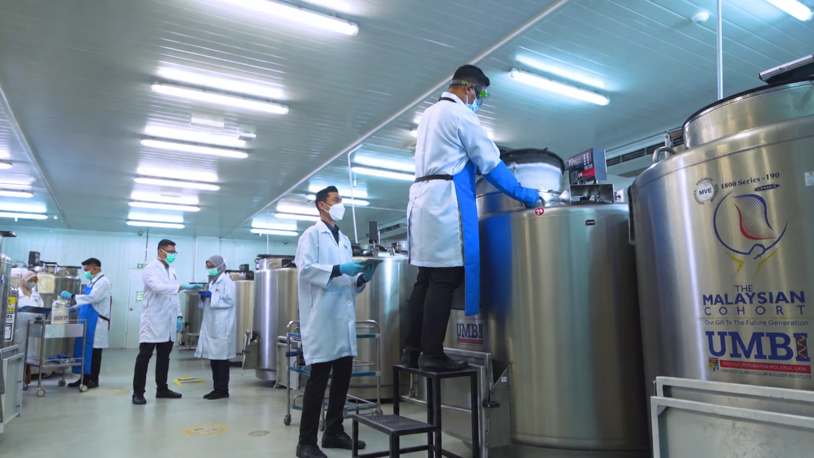

Screening visits
What to expect, how appointments are arranged and how to prepare.
Screening guide →Malaysia’s long-term population study brings together health information and biological samples to understand how genes, lifestyle and environment shape disease.

What to expect, how appointments are arranged and how to prepare.
Screening guide →How screening results are delivered and how to contact the cohort team.
Results guidance →Facilities, laboratory accreditation (MS ISO 15189:2022 · SAMM 537), publications and collaboration.
Biobank & Research →TMC studies how genetic, environmental and lifestyle factors affect health. Its long-term data and biobank support research into risk factors and early signs of disease. The study also contributes to the Asia Cohort Consortium.
UKM’s guide describes a 3–4 hour visit with questionnaires, blood and urine tests, and biophysical measurements. The team contacts participants to arrange appointments.
Prof. A. Rahman A. Jamal and Dr. Kathleen C. Barnes discuss Malaysia’s population diversity, genomics resources, and the opportunities and practical challenges of precision medicine.
Read the UKM report ↗TMC advertised contract Administrative Assistant N1 and Research Assistant Q1 positions. The UKM notice contains the eligibility requirements, application route, and recruitment contact.
Read the UKM report ↗A book announcement for Navigating Academia, a guide drawing on an experienced clinician-scientist’s account of academic work, leadership, and lessons for researchers.
Read the UKM report ↗No matching resources. Try another term.
UKM describes a visit of approximately 3–4 hours: questionnaires, blood and urine tests, and biophysical measurements. The team contacts participants to arrange appointments.
UKM describes printed results sent through Pos Malaysia to the registered address, with a stated dispatch timeframe of 14 working days from recruitment. Contact TMC about delivery questions.
Use the participant contact-information form published by UKM. The Participants page links directly to that form.
Read the published collaboration guidelines and contact the TMC management team to discuss your proposal, including any requirements for data or biospecimens.